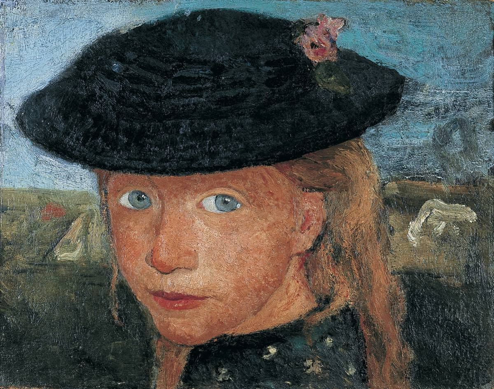

Prekursorka modernizmu
Paula Modersohn-Becker (1876-1907), uznawana za jedną z najważniejszych prekursorek modernizmu, należy do grona najznamienitszych artystek sztuki dwudziestowiecznej.
Ukształtowana przez prace Cézanne’a, Gauguina i van Gogha, wykształciła własną i niepowtarzalną malarską stylistykę. W ciągu ledwie dziesięciu lat intensywnej pracy artystycznej stworzyła około 750 obrazów, 1000 rysunków i 13 rycin.
Kunsthalle Krems prezentuje pierwszą w Austrii retrospektywę prac zmarłej w wieku 31 lat malarki, zatytułowaną Paula Modersohn-Becker: Pionierin der Moderne.